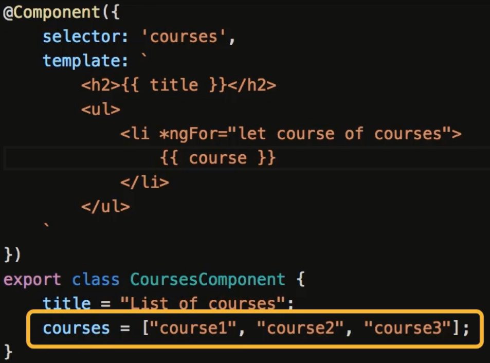
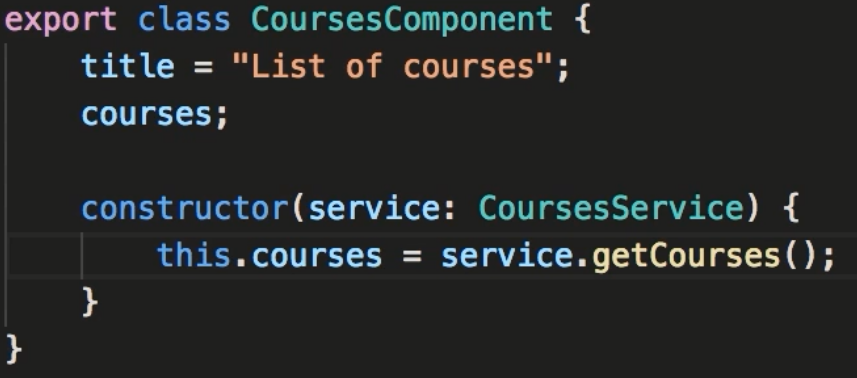
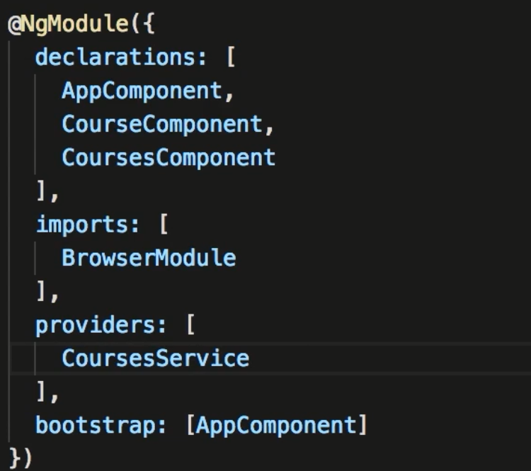

Section 3. Angular Fundamentals
31. Building Blocks of Angular Apps
- The main building block of Angular is a component. A component encapsulates the data: HTML template, and Logic for a section of the screen.
- An app has a root component or App component.
- Angular has at least 1 module (called app.module.ts)
- Modules are a way to group similar components into one item.
32. Components
- Steps to create a component. 1. create the component, 2. Register the component, 3. Add an element in the html markup
- The naming convention for a component is your-name.component.ts where yourname is the name of this component. Names with multiple words should be separated with a hypen.
- Components use pascal naming convention... every word is caplitalized. ie: CourseComponent
- Items needed in the component: import @angular/core. Use the @Component decorator. this is an object where you can define the
- selector:, template: (or templateURL), style: (or styleURLs: [])
- As above in the typescript example you need to export the class component
- After creating the component you need to register the component in app.module.ts. Import your component and add to the declarations section of the file.
- *** a handy plug-in is auto import. this will import the file as you declare your component.
- To use this component add the selector to the calling .html file.
33. Generating Components using Angular CLI
- To simplify component creation you can use the angular cli tool
- to create a course component type: ng g c course
- Angular cli will create a folder called course, and in it create the .css .html, .spec.ts and .ts files
- It will also update app.module.ts to use your new component
34. Templates
- Displays the html mark up. You can use values from the component using interpolation. Surround the variable with 2 curly braces.
- Anything can be put between the double curly braces.
35. Directives
- Directives allow for conditioning input in the html
- Use an * when modifying the structure of the DOM. ie: *ngFor
- See Example below:

36. Services
- Use services to move the process of getting data into its own file. this should not be the responsibility of the component.
- To create a service name as: your-service.service.ts
- Services do not have a type decorator. the are simply an exported class
- In our example we simply create a method that returns the courses. eg: getCourses() return courses = [ ... ]
-
37. Dependency Injection
- Dependency injection is an Angular framework for creating an instance of an object at run time. This method decouples the method from the component.
- A singleton instance is used through out the entire program. Angular requires that this dependency be register in app module.
- Look at the following example: the constructor creates an instance of the courseService.

- In order for this to work you need to register the service as providers

38. Generating Services using Angular CLI
- To create a service using angular cli:
- type: ng g s your-service
- This creates 2 files, your-service.service.ts and your-service.spec.ts. Note: the service has not been registered in the providers of the app.module.ts file
- The generator adds the Injectable module. this would only be needed if you have depenencies in your constructor of your service.
- Otherwise this can be taken out. btw: the Injectable decorator isn't needed for components. It is a part of the Component decorator.
Assignment: List of Authors